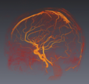
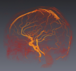
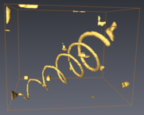
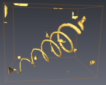
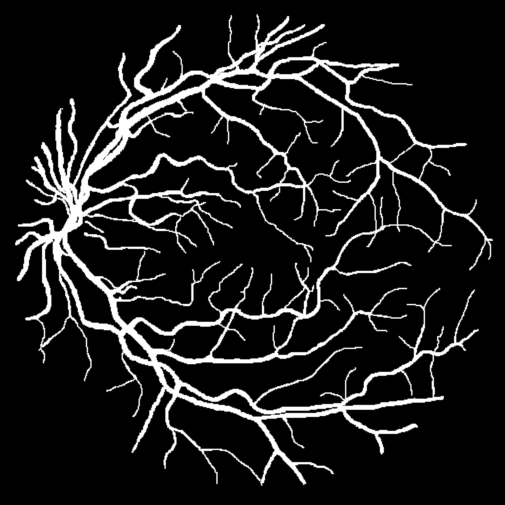
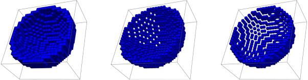
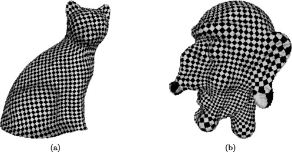

Demos and Gallery
This page contains many demonstrations and illustrations related to discrete geometry and mathematical morphology.Table of content:
- Demos: A collection of demonstrations usually with source code available online.
- Gallery: Illustrations related to common problems in discrete geometry and mathematical morphology.
You think that your demo or illustration should be listed here: just send a mail to tc18@tc18.org
Demos
IPOL
Image Processing Online is "a research journal of image processing and image analysis which emphasizes the role of mathematics as a source for algorithm design and the reproducibility of the research". An online demo is attached to each article published in this journal. Digital geometry demos are under the topic "Geometry" and are listed below.- Streaming Distance Transform Algorithm for Neighborhood-Sequence Distances (Nicolas Normand, Robin Strand, Pierre Evenou, Aurore Arlicot)
- Digital Level Layers for Digital Curve Decomposition and Vectorization (Laurent Provot, Yan Gerard, Fabien Feschet)
- A Near-Linear Time Guaranteed Algorithm for Digital Curve Simplification Under the Fréchet Distance (Isabelle Sivignon)
- Meaningful Scales Detection: an Unsupervised Noise Detection Algorithm for Digital Contours (Bertrand Kerautret, Jacques-Olivier Lachaud)
- Interactive Segmentation Based on Component-trees (Benoît Naegel, Nicolas Passat)
- Extraction of Connected Region Boundary in Multidimensional Images (David Coeurjolly, Bertrand Kerautret, Jacques-Olivier Lachaud)
- 2D Filtering of Curvilinear Structures by Ranking the Orientation Responses of Path Operators (RORPO) (Odyssee Merveille, Benoît Naegel, Hugues Talbot, Laurent Najman, Nicolas Passat)
- Watervoxels (Pierre Cettour-Janet, Clément Cazorla, Vaia Machairas, Quentin Delannoy, Nathalie Bednarek, François Rousseau, Etienne Décencière, Nicolas Passat)
IPOL based demonstrations
- Fast Blurred Segment Detector (Philippe Even, Phuc Ngo, Bertrand Kerautret)
Miscellaneous
- Online interactive segmentation with morphological hierarchies (Benjamin Perret and Jean Cousty)
- Digital Surfaces of revolution (Eric Andres, Gaëlle Largeteau-Skapin)
- Interactive Curvature Tensor Visualisation (Hélène Perrier and Jérémy Levallois, David Coeurjolly, Jean-Philippe Farrugia, Jean-Claude Iehl and Jacques-Olivier Lachaud): download
Gallery
- Piyush Kanti Bhunre and Partha Bhowmick, Carve in, carve out: a bimodal carving through voxelization and functional partitioning, The Visual Computer, Vol. 34, pp. 1009-1019 (2018).
- Bertrand Kerautret, Adrien Krähenbühl, Isabelle Debled-Rennesson, Jacques-Olivier Lachaud: Centerline detection on partial mesh scans by confidence vote in accumulation map. ICPR 2016: 1376-1381
-
 
  

- O. Merveille, H. Talbot, L. Najman, N. Passat. Curvilinear structure analysis by ranking the orientation responses of path operators. IEEE Tr ansactions on Pattern Analysis and Machine Intelligence 40(2):304-317 (2018).
-

- Edwin Carlinet and Thierry Géraud. {MToS}: A Tree of Shapes for Multivariate Images. IEEE Transactions on Image Processing, 24(12):5330--5343 (2015).
- 
- P. Ngo, N. Passat, Y. Kenmochi, H. Talbot. Topology-preserving rigid transformation of 2D digital images. IEEE Transactions on Image Processing, 23(2):885-897 (2014).
- Binary objects obtained from retina image segmentation. The non-processed image suffers from topological alterations during rotation, due to the small size of linear structures. The "regularized" image, generated by a sup/inf Khalimsky grid embedding, is no longer affected by topological changes.
-

- P. Ngo, Y. Kenmochi, N. Passat, H. Talbot. Combinatorial structure of rigid transformations in 2D digital images. Computer Vision and Image Understanding, 117(4):393-408 (2013).
- Parameter space of 2-dimensional continuous rigid transformations (a1, a2: translation; θ: rotation), subdivided with into cells that represent the associated discrete rigid transformations. The visualized surfaces correspond to limit cases at the frontier between to pixels.
- 
- J.-L. Toutant, E. Andres, T. Roussillon, Digital circles, spheres and hyperspheres: From morphological models to analytical characterizations and topological properties, Discrete Applied Mathematics, Volume 161, Issues 16–17, November 2013, Pages 2662-2677
-

- D. Coeurjolly, J.-O. Lachaud, J. Levallois, Multigrid convergent principal curvature estimators in digital geometry, Computer Vision and Image Understanding, 2014.
- 
- C. Cartade, C. Mercat, R. Malgouyres, C. Samir, Mesh Parameterization with Generalized Discrete Conformal Maps, Journal of Mathematical Imaging and Vision, May 2013, Volume 46, Issue 1, pp 1-11